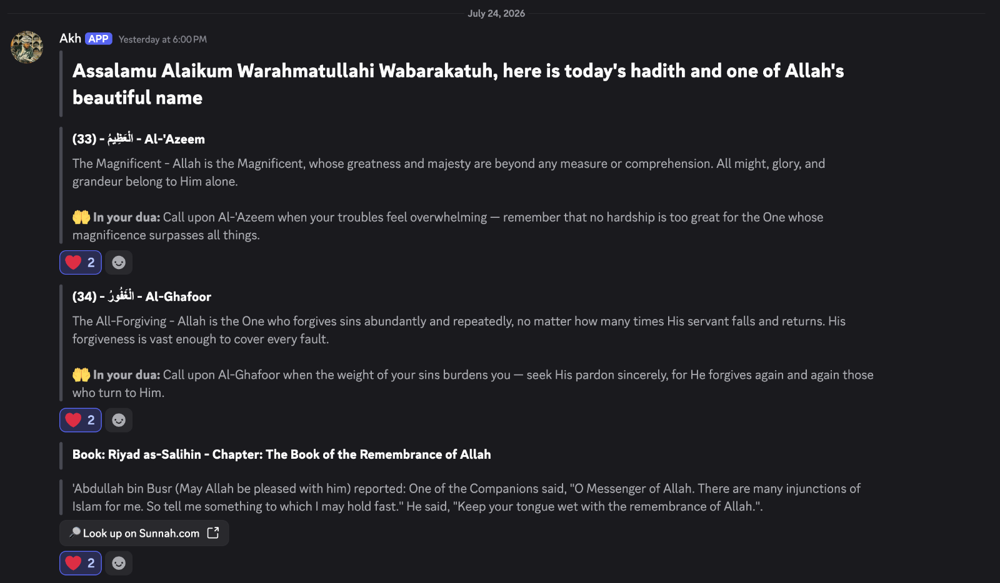

A daily hadith & the 99 names of Allah, in your server.
HadithBot posts a hadith and Allah's beautiful names to your channel every day — and answers on-demand whenever you ask.
Sent automatically at 6:00 PM Toronto time · No setup fees · Takes 1 minute
Convey from me, even if it is one verse
HadithBot is one small way of doing what the Prophet (ﷺ) asked of everyone who hears his words. Two hadiths are the whole reason it exists.
Convey (my teachings) to the people even if it were a single sentence, and tell others the stories of Bani Israel (which have been taught to you), for it is not sinful to do so. And whoever tells a lie on me intentionally, will surely take his place in the (Hell) Fire.
Passing on something true doesn't wait until you're a scholar. One hadith, shared faithfully, counts. The warning in the second half is why every message links back to Sunnah.com, and why readers can flag anything that looks wrong.
May Allah gladden a man who hears a Hadith from us, so he memorizes it until he conveys it to someone else. Perhaps he carries Fiqh to one who is more understanding than him, and perhaps the one who carries the Fiqh is not a Faqih.
A reminder dropped into a channel may land with someone who understands it better than whoever sent it. The bot only carries the words. Whatever grows from them is between the reader and Allah.
What it actually looks like
A real daily message: each of Allah's names with its meaning and a short reflection, then the hadith with a link straight to its source.

Quiet, consistent reminders — your way
Set it once and it runs itself. Every option is tunable per channel.
Daily automatically
A fresh hadith and Allah's names land in your channel every day at 6:00 PM Toronto time — no reminders needed.
You set the amount
Choose how many hadiths and how many of the 99 names go out each day, from 1 to 10 — different for every channel.
The 99 names
Works steadily through the beautiful names of Allah, in order, so the whole list is covered over time.
A reflection with every name
Each name arrives with its meaning and a short note on when to call upon it in your dua — see all 99 of them.
Straight to the source
Every hadith names its book and chapter, and comes with a button to look it up on Sunnah.com.
On-demand commands
Ask for a random hadith, a specific one by book and chapter, or any of Allah's names — instantly, any time.
Multiple channels
Run it in as many channels as you like, each picking up right where it left off with its own settings.
Start anywhere
Begin from any book, chapter, or hadith — and re-running setup never loses a channel's place.
Serving a few communities, insha'Allah
MSAs, halaqas, and group chats among friends — every one of them a channel where a hadith turns up unprompted each evening.
Counts only — the bot has no idea who any of your members are. See the privacy policy.
Add it to your server in 3 steps
About a minute, start to finish.
Click “Add to Discord”
Hit the button below. You'll be taken to Discord's official authorization screen — no password is ever shared with the bot.
Pick your server
Choose the server from the dropdown and press Authorize. You'll need the Manage Server permission on that server — owners and admins have it; a moderator role often doesn't. If the server you want isn't in the dropdown, that's why: ask an admin to add it for you.
Run setup in a channel
Go to the channel you want, type /bismillah setup, and you're live. Daily messages start the same evening.
Want the longer version, with the options and the permission errors people hit? Read the setup guide →
Configure it
All configuration happens with one command: /bismillah setup. You need the Manage Channels permission to use it.
Turn it on in a channel
Run this inside the channel where you want the daily messages:
That's it — it starts from the very beginning with 3 hadiths and 3 names each day. Want to customize? Add any of these options:
- hadiths_per_day — how many hadiths to send daily (1–10, default 3)
- names_per_day — how many of Allah's names to send daily (1–10, default 3)
- channel — target a different channel (defaults to the one you're in)
- start_book_id / start_chapter_id / start_hadith_id — begin from a specific place (all the ids are here)
- start_name — begin the names from a specific number
Examples
Send 5 hadiths and 2 names every day:
Change just the count — keeps the channel's place:
See what's set up across your server:
Stop daily messages in a channel:
Every command
All commands are grouped under /bismillah.
| Command | What it does | Who |
|---|---|---|
/bismillah setup |
Turn on daily messages in a channel and set the per-day counts and starting point. | Manage Channels |
/bismillah status |
Show which channels are set up, their daily counts, and where each one is up to. | Manage Channels |
/bismillah diagnose |
Not posting? Check every channel and report exactly what's
blocking it. Add send_test: True to attempt a
real message.
|
Manage Channels |
/bismillah stop |
Stop daily messages in a channel. | Manage Channels |
/bismillah random |
Post a random hadith right now. | Everyone |
/bismillah specific |
Post a specific hadith by book, chapter, and hadith number. | Everyone |
/bismillah random_name |
Post a random name of Allah. | Everyone |
/bismillah specific_name |
Post one of Allah's names by number. | Everyone |
/bismillah specific_names |
Post three of Allah's names starting from a number. | Everyone |
/bismillah books |
List all books and their ids (for use with setup). | Everyone |
/bismillah chapters |
List the chapters and ids inside a book — or read them all on the books & chapters page. | Everyone |
Frequently asked
Is it free?
Yes — completely free and open source. You can read the code, self-host it, or contribute on GitHub.
When are the daily messages sent?
Every day at 6:00 PM Toronto time (America/Toronto), in each channel you've set up.
Can different channels have different settings?
Yes. Each channel keeps its own per-day counts and its own place in the hadiths and names, so you can run it differently in as many channels as you like.
Will changing the daily count reset my progress?
No. Re-running /bismillah setup only changes the options you provide — anything left blank, including the reading position, is preserved.
What permissions does the bot need?
Just enough to do its job: View Channel and Send Messages in the channels you use it in. To run setup, stop, or status, a member needs the Manage Channels permission.
Can a moderator add the bot, or does it take an admin?
Discord itself decides this: only someone with the Manage Server permission can add any bot to a server. The owner and admins always have it. Moderators only do if their role was given it — plenty of mod roles stop at Manage Messages, kick, ban, and timeout, which isn't enough. A mod without it will find the server greyed out on the authorization screen and will need an admin to add HadithBot. Once it's in, though, configuring it is a separate matter: any mod with Manage Channels can run /bismillah setup.
Built for the same reason
A small family of free, private tools for everyday Muslim life. No accounts, no ads, no tracking — take whatever helps.
Hayya — Prayer Alarm
Prayer times that ring like an incoming call — full-screen, with a real ringtone, calling back until you answer. Answering logs the prayer and grows a streak you have to earn.
Get the app →Learn Quran
Section-by-section memorization guides for Juz 29 and 30 — verified Arabic and translation, key vocabulary, memory hooks, a recitation guide, and drills to test yourself.
learn-quran.app →Lower Your Gaze
A quiet companion for guarding your gaze — a daily reminder, a check-in streak, a library of practical tactics, and a full-screen refuge for the moment an urge hits.
lower-your-gaze.vercel.app →Marketplace Du'a
A browser extension that gently reminds you of the du'a for entering the marketplace when you land on Amazon, eBay, or any shop you add yourself.
Get the extension →Islamic decks on MugUp
Three decks of drills — quizzes, flashcards and fill-in-the-blanks — free to copy into your own account and learn at your own pace.
mugup.app →Something not working?
If the daily message hasn't arrived, run /bismillah diagnose in your server first — it checks every channel you've set up and usually says exactly what's wrong.
If that doesn't sort it, or you'd like your community listed on this page, send a note. Mention your server's name and it'll be easier to help.
✉ Email supportPrefer not to email? Open an issue on GitHub instead — it's public, so don't include anything private.
Bring daily reminders to your server
Add HadithBot in under a minute and let the good deeds flow, insha'Allah. Already have it? Send it to the next MSA.